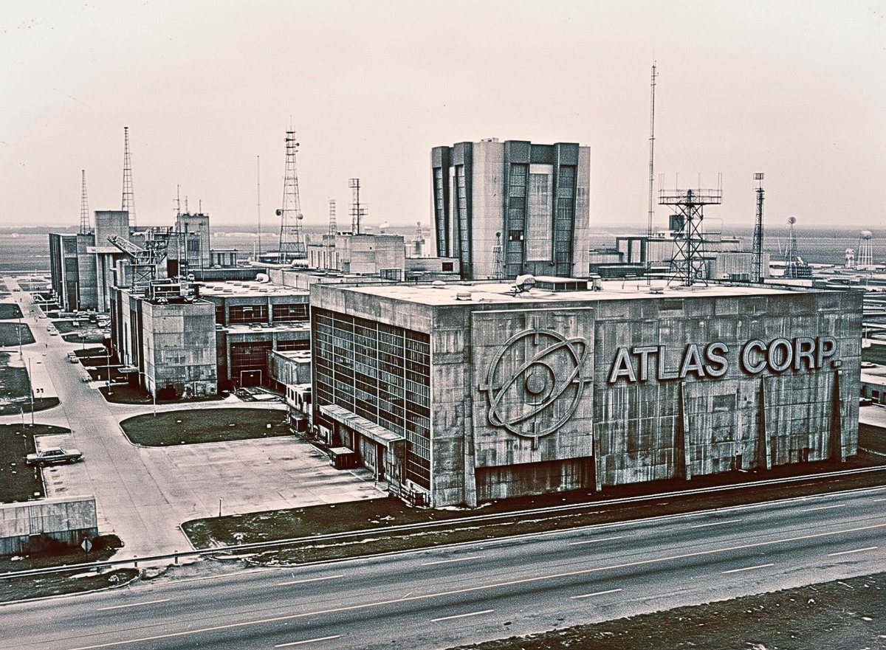
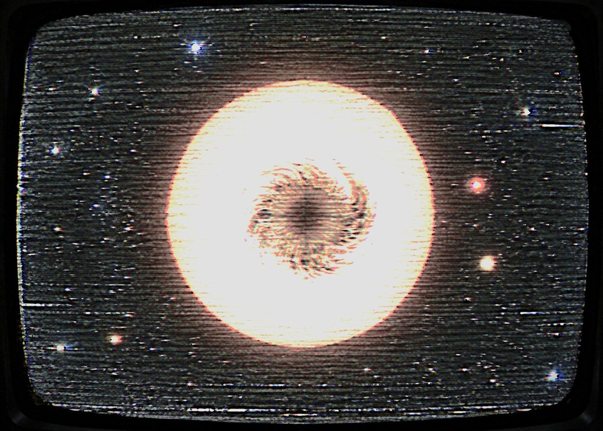
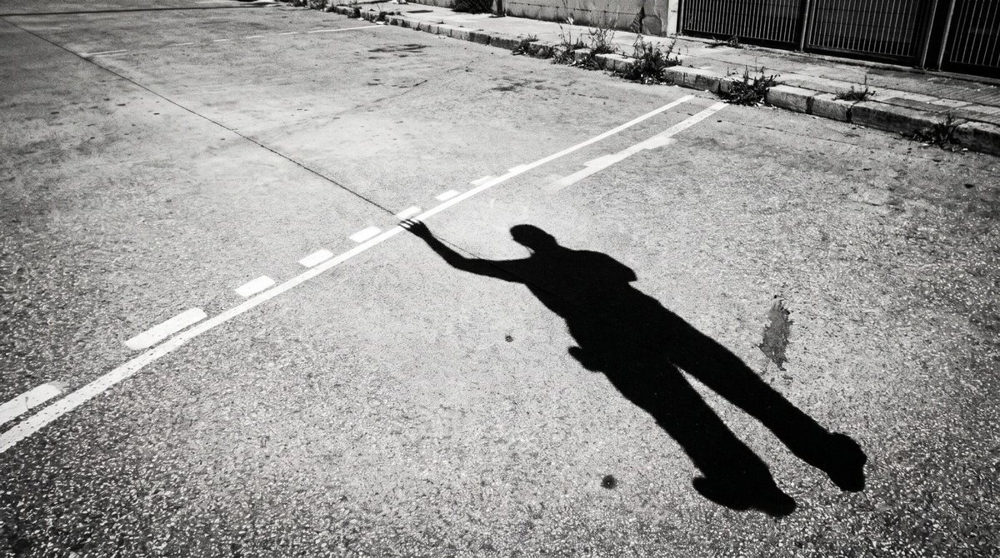
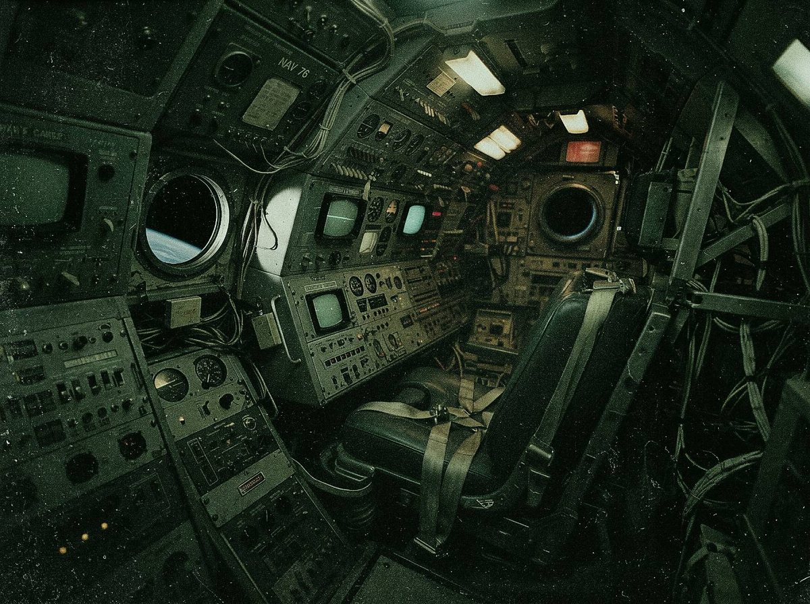
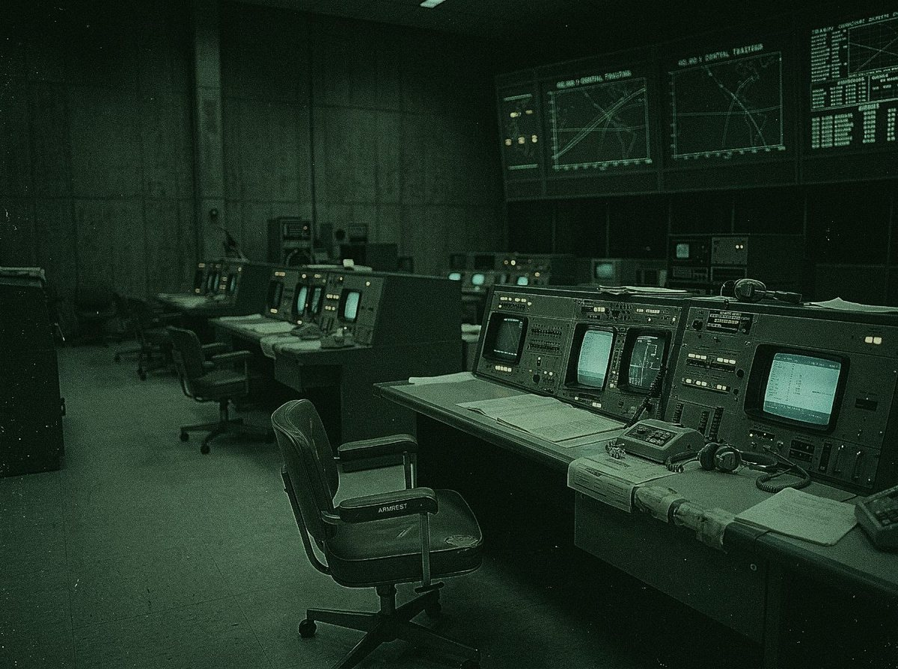

INVESTIGACIÓN Y EXPLORACIÓN ESPACIAL
Comité de Continuidad · Sistema de Información Pública ATLAS-NET
Atlas Corporation es una empresa privada de exploración espacial, fundada en 1954. El 17 de julio de 1982 el Sol se apagó durante cuatro décimas de segundo. Atlas busca a dos personas para que no vuelva a ocurrir.

Atlas Corporation no sabe qué causó el Apagón. Nadie lo sabe. Lo que sí sabemos es que, aprovechando una alineación entre determinados cuerpos celestes y la Luna, es posible enviar una onda hacia el Sol capaz de alterar temporalmente el fenómeno responsable.
La sonda ATLAS-H necesita a una persona en el espacio y a otra en Tierra que la guíe. Atlas ya no cuenta con el personal suficiente para realizar la operación. Por eso esta convocatoria es pública.
Leer la misión y los puestos ›
Espejo público diferido. La luz del Sol tarda 8 minutos 20 segundos en llegar a los instrumentos. Todo lo que aparece en él ya ocurrió.


No necesita formación técnica ni experiencia previa. Sólo tiene que seguir instrucciones mientras ocurre algo que no le resulta familiar.


Fig. 3 y 4: fotografías de archivo, tomadas antes del Apagón. La sonda y la Central de Comando han sido modificadas desde entonces y su aspecto actual no coincide con el de las imágenes.
Atlas Corporation
Copyright © 1983 Atlas Corporation. Todos los derechos reservados. — Sistema de Información Pública v1.4 ALGUNAS SECCIONES EN CONSTRUCCIÓN
REF: PROTOCOLO DE SILENCIO · ARCHIVO 1955–62 · [RESTRINGIDO]
Usted es el visitante 00000000 de este terminal desde agosto de 1982. · ATLAS-NET es un sistema propietario. No es compatible con redes ni equipos de terceros.